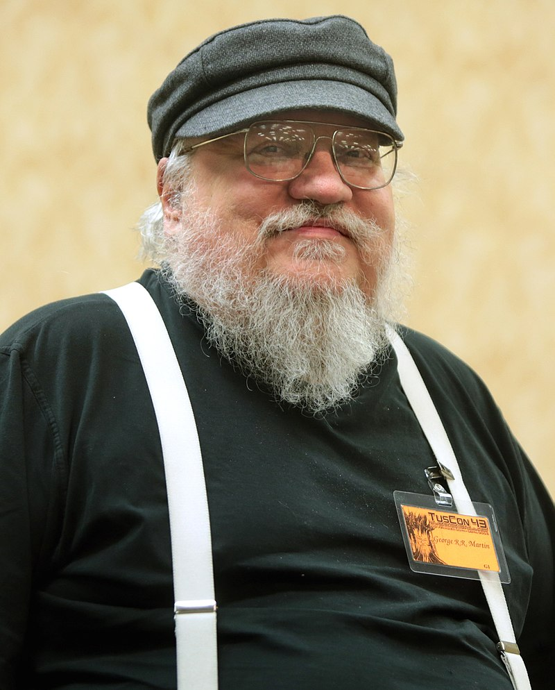

Introduction Générale
Game of Thrones , également appelée Le Trône de ferb
(selon le titre français de l'œuvre romanesque dont elle est adaptée),
est une série télévisée américaine de Fantasy créée par David Benioff et D. B. Weiss,
diffusée entre le 17 avril 2011 et le 19 mai 2019 sur HBO aux États-Unis en simultané sur HBO Canada au Canada.
Il s'agit de l'adaptation de la série de romans écrits par George R. R. Martin depuis 1996, saga réputée pour son réalisme et par ses nombreuses inspirations tirées d’événements,
lieux et personnages historiques réels, tels que la guerre des Deux-Roses, le mur d'Hadrien ou Henri VII Tudor.L'histoire de la série,
située sur les continents fictifs de Westeros et Essos à la fin d'un été d'une dizaine d'années, entrelace trois grandes intrigues.
La première intrigue raconte l'histoire de Jon Snow et de la future menace croissante de l'hiver approchant,
des créatures mythiques et légendaires venues du Nord du Mur de Westeros qui sépare le Royaume des Sept Couronnes de la menace située au-delà.
La deuxième intrigue relate la démarche de Daenerys Targaryen, au sud d'Essos,
(la dernière représentante en exil de la dynastie déchue) en vue de reprendre le Trône de Fer; symbole du pouvoir absolu.
La troisième intrigue conte l'histoire des membres de plusieurs familles nobles,
dans une guerre civile pour conquérir le Trône de Fer du royaume des Sept Couronnes. À travers ces personnages « moralement ambigus »,
la série explore les sujets liés au pouvoir politique, au changement climatique, à la hiérarchie sociale, la religion, la guerre civile,
la sexualité et à la violence en général.
N°1 : David Benioff
David Benioff , né le 25 septembre 1970 à New York, est un producteur de télévision,
réalisateur, scénariste et romancier américain. Il est notamment le co-créateur,
showrunner et écrivain de la série télévisée Game of Thrones. Il est aussi le scénariste de Troie,
ainsi que le co-scénariste et auteur de l’histoire originale de Gemini Man.
N°2 : DB WEISS

Daniel Brett Weiss ou DB Weiss , né le 23 avril 1971 à Chicago, est un scénariste et écrivain américain.
Spécialisé dans l'écriture pour jeux vidéo, il a écrit le roman Video Games qui a été publié en 2003.
Il est notamment connu comme le cocréateur avec David Benioff de la série télévisée Game of Thrones.
N°3 : George R.R. Martin

George R. R. Martin , né le 20 septembre 1948 à Bayonne (New Jersey), est un écrivain américain de science-fiction et de fantasy,
également scénariste et producteur de télévision. Son œuvre la plus célèbre est la série romanesque du Trône de fer,
adaptée sous forme de série télévisée par HBO sous le titre Game of Thrones.
Il a été récompensé par de nombreux prix littéraires et a été sélectionné par le magazine Time comme l'une des personnes
les plus influentes du monde en 2011. Il est aujourd'hui considéré comme le « Tolkien américain »
La Liste des saisons
| Saison |
| Années |
Début de saison |
Fin de saison |
| 1 |
2011 |
17 avril 2011 |
19 juin 2011 |
| 2 |
2012 |
1 avril 2012 |
3 juin 2012 |
| 3 |
2013 |
31 mars 2013 |
9 juin 2013 |
| 4 |
2014 |
6 avril 2014 |
15 juin 2014 |
| 5 |
2015 |
12 avril 2015 |
14 juin 2015 |
| 6 |
2016 |
24 avril 2016 |
26 juin 2016 |
| 7 |
2017 |
16 juillet 2017 |
27 août 2017 |
| 8 |
2019 |
14 avril 2019 |
19 mai 2019 |